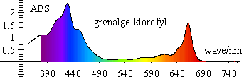

Dataopsamling og analyse fra over 100 serielle apparater, pc'ens lydkort og enkelte andre apparater.
Denne hjemmeside indeholder en beskrivelse af alle apparater, som kan benyttes i forbindelse med Datalyse. Desuden indeholder den en masse forsøgsvejledninger. Mange med forsøgsresultater og rode råd.
Nyhed:
Carl Hemmingsen